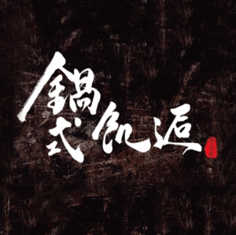
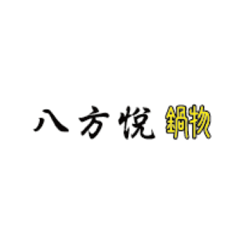
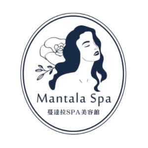
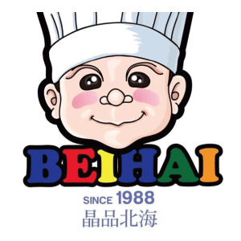
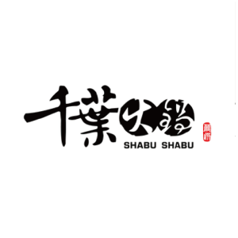

守護者聯盟企業
健身工廠為台灣運動健身產業首屈專業領導品牌，並獲得SGS Qualicert國際服務驗證標章。響應合庫人壽「守護Plus 夢想更踏實」公益活動，加入「守護者聯盟」行列，擔任照顧者健康指導單位。幫助照顧者成功培養運動習慣、提升運動識能，養成強健的體魄！
臺灣長照營養暨健康促進協會致力長期照護營養專業推廣，增強各專業人員營養知識與技能，提升營養照護品質。響應合庫人壽「守護Plus 夢想更踏實」公益活動，加入「守護者聯盟」行列。擔任照顧者飲食指導單位，由專業營養師提供一對一營養諮詢，為照顧者提供最完善的營養建議。
AROMASE艾瑪絲創立於2004年，為全球頭皮養護專家品牌。「用心了解需求、積極解決問題」為品牌助人理念。響應合庫人壽「守護Plus夢想更踏實」公益活動，發起CSR艾從頭開始，舉辦系列講座，呵護照顧者。更將於「伴伴市集」義賣艾瑪絲洗髮精全數捐助家庭照顧者關懷總會，用行動傳遞愛。艾瑪絲堅信照顧者照顧好自己，就有能量傳遞給需要照顧的人。
THEFREEN BURGER樂檸漢堡，帶著「舒衡自然、豐實自在」的本心，從原料、製作、飲品無一不包。對了！還要再加上一條感動生活的短褲喔～ 響應合庫人壽「守護 Plus 夢想更踏實」公益活動，加入「守護者聯盟」行列。凡購買一組樂檸團隊自家鮮烘的「海灘褲濾掛咖啡組」即捐贈8.8%予家庭照顧者關懷總會，讓家庭照顧者重展歡愉笑顏。
巷貓餐廳Alleycat’s Pizza中的義式披薩富含著台灣風情，窯烤滋味誘人，皮薄料多超滿足。響應合庫人壽「守護 Plus 夢想更踏實」公益活動，加入「守護者聯盟」行列。與家庭照顧者關懷總會公益活動結合，提供美味餐點，讓辛苦的照顧者在喘息之餘，也能品嘗難得的好滋味！一塊披薩，讓守護不孤單。
雀巢健康科學身為國際營養品大廠，守護全球超過200個國家的病人，提供最專業的營養支持。2019年起，雀巢健康科學邀請四分衛製作歌曲《走過意外的旅程》、發起「照護者四分衛關懷滿分計畫」在各大藥局設立照顧者專區，支持照顧者。今年，響應合庫人壽「守護 Plus 夢想更踏實」公益活動，加入「守護者聯盟」行列，擴大守護照顧者的力量，讓愛循環。
台G店養生廚房堅持每天現熬雞湯，以各種土雞湯鍋和私房雞料理擄獲饕客的心。響應合庫人壽「守護 Plus 夢想更踏實」公益活動，加入「守護者聯盟」行列。凡購買守護者套餐，不但現省16元，更捐贈6%予家庭照顧者關懷總會，讓你身暖暖，心也暖暖。

鍋式肌逅
鍋式肌逅以精緻鍋物料理為一大特色，主廚細心挑選新鮮食材為聚餐最佳的選擇！響應合庫人壽「守護 Plus 夢想更踏實」公益活動，加入「守護者聯盟」行列，推出「套餐名稱待確」，每份捐出(金額待確)元予家庭照顧者關懷總會，延續愛心。

八方悅鍋物
顧客從「八方」四面而來，帶著滿足愉「悅」的心情離去，是「八方悅」的品牌理念。食材新鮮、用料實在的一貫堅持，讓顧客吃的健康又美味！響應合庫人壽「守護 Plus 夢想更踏實」公益活動，加入「守護者聯盟」行列，推出「套餐名稱待確」，每份捐出(金額待確)元予家庭照顧者關懷總會，用行動支持照顧者！

蔓達拉SPA美容館
蔓達拉Spa美容館，由一群經驗豐富的美容師團隊組成，迄今已42年，願每一位在喧囂都市中失去力量的女子，都能在此找到心靈與身體的放鬆，今年蔓達拉響應合庫人壽「守護 Plus 夢想更踏實」公益活動，加入「守護者聯盟」行列，凡於店內消費「美式蘋果光美顏淨化護理120分」或「MESO溫熱負壓儀+神之湯負離子巨蛋型岩盤浴」，每份捐出5%予家庭照顧者關懷總會，讓你內外皆美麗！

晶品北海婚宴會館
晶品北海婚宴會館堅持選用新鮮自然的食材，製作口味獨到的特有菜色，征服客戶的胃與「心」，成功點「食」成金。響應合庫人壽「守護 Plus 夢想更踏實」公益活動，加入「守護者聯盟」行列，推出「套餐名稱待確」，每份捐出(金額待確)元予家庭照顧者關懷總會，讓愛延續。

千葉火鍋
千葉火鍋講究食材的新鮮、豐富、多樣化以及挑高、寬敞的用餐環境，給顧客最好的。響應合庫人壽「守護 Plus 夢想更踏實」公益活動，加入「守護者聯盟」行列，推出「套餐名稱待確」，每份捐出(金額待確)元予家庭照顧者關懷總會，傳遞愛的力量。